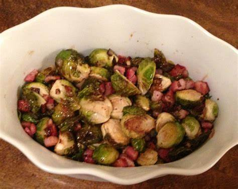

Healthy and Tasty Sprouts

Description:
Tired of the same boring old sprouts. Wanna try something new?
Sprouts need not be only healthy and not tasty from now on...
Ingredients:
- beans of your choice(grams, kidney beans, sprouts)
- salt(preferably black or rock salt)
- pepper
- onions(half)
- cucumber(one medium size)
- green chillies(1 or 2)
- lemon juice(1 tsp)
Method:
- Soak the beans overnight in water
- Next day, take them out of water and tie them in wet cloth for one day
- When the beans are sprouted, take them in your bowl, add freshly cut vegetables along with salt and pepper.
- Now add one tsp of lemon juice
- Mix and enjoy your fresh sprouts
return to homepage